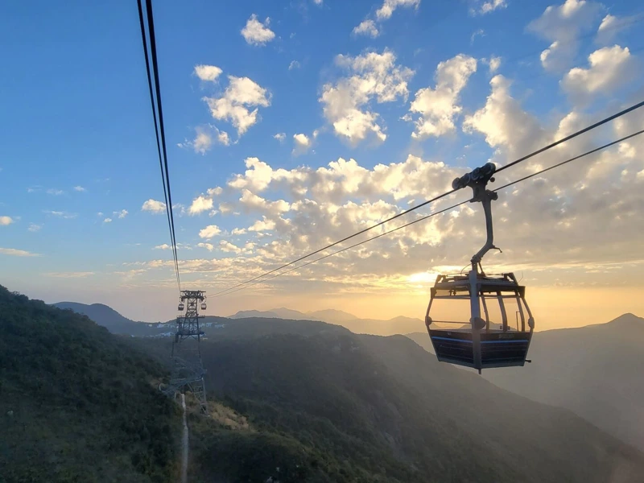
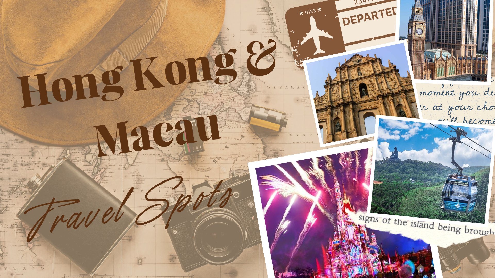
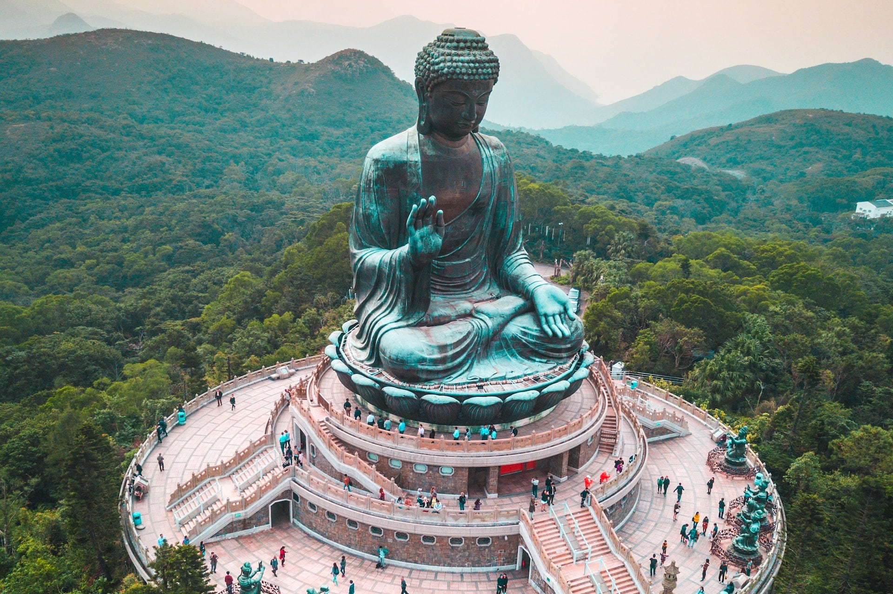
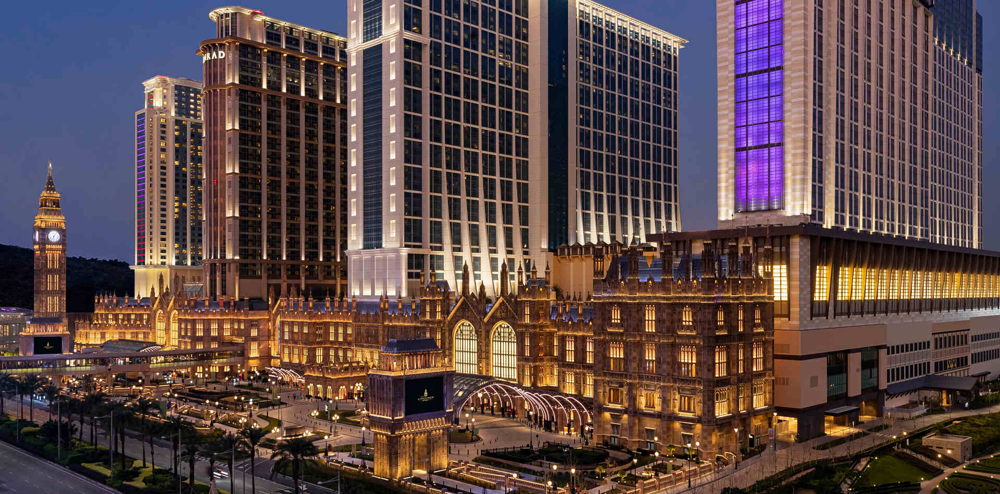
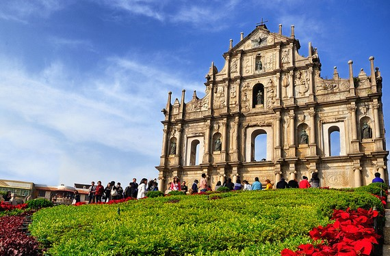

Ngong Ping 360 Cable Car
Scenic Attraction
It offers breathtaking views of Lantau Island and the surrounding mountains.


Discover iconic sights, cultural gems, and magical destinations.
Scenic Attraction
It offers breathtaking views of Lantau Island and the surrounding mountains.

Religious Site
It is a massive bronze Buddha statue that offers a peaceful atmosphere and beautiful scenery.

Resort and Landmark
It offers grand London-inspired architecture and amazing photo spots.

Theme Park
It is a magical place where dreams come to life, offering thrilling rides, delightful shows, and unforgettable experiences.

Historical Site
It is a UNESCO World Heritage Site that represents Macau’s colonial past and showcases beautiful historic architecture and rich cultural significance.
